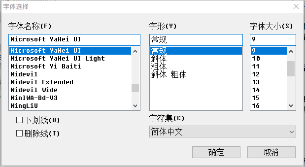

2.1 首先
在文件资源管理器中双击noMeiryoUI.exe的图标  运行软件。
运行软件。
之后会出现如下界面。
当前Windows版本信息将以系统名称（内部版本号）的形式在上方显示。当您需要向作者反馈运行情况及BUG时可一并附上。

在文件资源管理器中双击noMeiryoUI.exe的图标  运行软件。
运行软件。
之后会出现如下界面。
当前Windows版本信息将以系统名称（内部版本号）的形式在上方显示。当您需要向作者反馈运行情况及BUG时可一并附上。
本软件界面出现的同时，当前系统界面各个部分所用字体名也会一并显示出来。
如需变更某项字体，请按下字体名右侧的“选择”键。
待字体选择对话框弹出后，可按喜好来设定字体、字体大小、字形。
当全部字体设定完成后，按下右下角的“设定”键即可让调整后的字体应用在系统界面内。
而当您选择的字体中包含名称以"@"开头的字体时，系统将会弹出对话框询问您是否确定选择该字体。
此时如您按下“否”，则该字体将不会被选择。如按下“是”，则该字体将会被选择。
最上方的“所有字体”一栏的作用是将该栏所选字体应用到下方所有系统界面项目中。
当您按下该栏字体名称右侧的“选择”，并通过字体选择对话框选择特定字体后，再按下“设定所有”即可统一所有系统界面所用字体、字体大小与字形。
而当您选择的字体中包含名称以"@"开头的字体时，系统将会弹出对话框询问您是否确定选择该字体。
此时如您按下“否”，则该字体将不会被选择。如按下“是”，则该字体将会被选择。
按下字体名右侧的“选择”后，软件将会弹出字体选择对话框。

通过字体选择对话框能够进行下列设定：
| 名称 | 功能 |
|---|---|
| 字体名称(F) | 选择字体。 |
| 字形(Y) | 指定字体的字形(粗体/斜体)。 |
| 字体大小(S) | 指定字体大小。 |
| 下划线(U) | 勾选此项来为文字添加下划线。 |
| 删除线(T) | 勾选此项来为文字添加删除线。 |
选择完毕后按下“确定”键即可选择该字体
当您未选择某些必选项目时软件将会报错，届时请根据错误信息提示来进行操作。
利用特定命令行及参数，不仅可以使软件在启动时自动加载指定字体设定配置，更可以做到直接将字体设定配置直接应用在系统界面中。
命令行的写法如下列：
noMeiryoUI 字体设定配置文件名 [-set]
请将使用本软件保存的字体设定配置ini文件名填入命令行中对应的位置。
如字体设定配置文件的文件名或全体路径中包含空格，请用"（半角双括号）将其包括在内
可通过在字体设定配置文件后空一格并加入-set，让程序自动应用字体设定到系统中并自行退出。
也可将命令写入批处理文件内，以达到快速应用系统字体配置的效果。
例如您想要在启动软件的同时自动读取MySet.ini内的配置，可在命令提示符等工具内输入如下命令行：
noMeiryoUI MySet.ini
例如您想直接将系统字体按 Your Settings.ini文件内保存的配置进行设定，可在命令提示符等工具内输入如下命令行：
noMeiryoUI "Your Settings.ini" -set